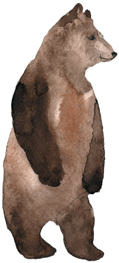

A technology workshop based in Western Canada—building tools, running experiments, and learning in public.
I care about software that's secure, portable, and fun to use—not just useful. Most of my work is exploratory: prototyping ideas, testing assumptions, and building toward a less commercial and less predatory internet. Technology should empower people, not subjugate them. I'm open to partnerships on the right project, but I'm not currently soliciting client work.
Get in Touch 📫
James Williams
Kanan Labs Ltd.
Vancouver and Calgary
james@kananlabs.org
© 2026 Kanan Labs Ltd.